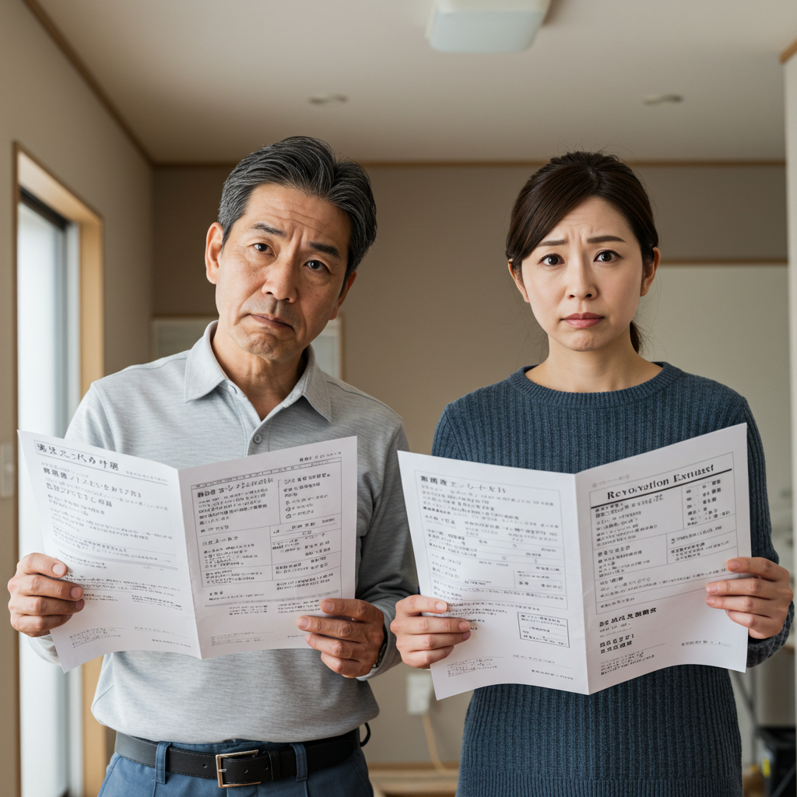

リフォーム見積もりの値引き交渉術！失敗しないコツと費用を抑える方法

導入
住み慣れた我が家を、より快適で、より自分らしい空間へと生まれ変わらせるリフォーム。キッチンをもっと使いやすくしたい、古くなったお風呂を新しくしたい、家族構成の変化に合わせて間取りを変えたい…そんな夢や希望を抱きながら、リフォームの計画を立てる時間は、とても心躍るものですよね。
しかし、その一方で、多くの方が頭を悩ませるのが「費用」の問題ではないでしょうか。理想を詰め込めば詰め込むほど、見積もり金額は膨らんでいき、「こんなにかかるのか…」と、思わずため息が出てしまうこともあるかもしれません。リフォームは決して安い買い物ではありません。だからこそ、少しでも費用を抑えたい、賢くやりくりして、納得のいく価格で理想の住まいを実現したい、と考えるのはごく自然なことです。
そんなとき、頭に浮かぶのが「値引き交渉」という選択肢。でも、「値引き交渉なんて、何だか気が引ける」「無理なことを言って、業者さんとの関係が悪くなったらどうしよう」「そもそも、リフォームで見積もりから値引きしてもらうことなんて可能なの？」といった不安や疑問を感じる方も少なくないでしょう。
結論からお伝えすると、リフォームにおける値引き交渉は、決して珍しいことではありません。そして、正しい知識と手順を踏まえれば、業者さんとの良好な関係を保ちながら、お互いが気持ちよく合意できる価格に着地させることは十分に可能です。大切なのは、やみくもに「安くしてほしい」と要求するのではなく、しっかりとした準備と、相手への敬意を持ったコミュニケーションを心がけることです。
この記事では、リフォームの見積もりにおける値引き交渉について、その可能性や相場、具体的な交渉術から、交渉を成功させるためのポイント、さらには値引き以外のコストダウン方法まで、幅広く、そして深く掘り下げて解説していきます。
これからリフォームを考えている方が、費用に対する漠然とした不安を解消し、自信を持って業者さんと向き合えるようになること。そして何より、後悔のない、心から満足できるリフォームを実現するための一助となることを願っています。落ち着いて、一つひとつ、一緒に確認していきましょう。あなたの理想の住まいづくりが、素晴らしいものになるよう、全力でサポートします。
リフォーム見積もりで値引き交渉は可能？相場と実態
まず最初に、多くの方が抱く「リフォームで見積もりから値引き交渉をしても良いのだろうか？」という疑問にお答えします。答えは、イエスです。適切な方法とマナーを守れば、値引き交渉は決してタブーではありません。ここでは、リフォーム業界における値引き交渉の実態と、その限界について詳しく見ていきましょう。
値引き交渉は珍しくない？
スーパーで野菜を買うときや、デパートで洋服を買うときに、値引き交渉をする人はほとんどいませんよね。しかし、リフォームのような高額な契約においては、価格交渉が行われること自体は決して珍しいことではありません。むしろ、業界の慣習として、ある程度の交渉が行われることを前提に見積もりを作成している業者も存在するほどです。
考えてみてください。リフォームは、定価が決まっている既製品を買うのとはわけが違います。お客様一人ひとりの家の状況、希望するデザイン、使用する材料、工事の規模や難易度など、様々な要素を組み合わせて作り上げる、いわばオーダーメイドの商品です。そのため、見積もり金額には、材料費や人件費といった「原価」に加えて、会社の運営に必要な「経費」や「利益」が含まれています。この「利益」の部分に、交渉の余地が生まれることがあるのです。
業者側も、数ある競合の中から自社を選んでもらいたいと考えています。そのため、契約を真剣に検討してくれているお客様に対しては、「なんとかご期待に応えたい」という気持ちを持っています。特に、お客様がしっかりとリフォームについて勉強し、誠実な態度で交渉に臨んでくれれば、業者側も真摯に対応してくれるケースがほとんどです。
ただし、注意したいのは、「値引き交渉が当たり前」という態度で臨むべきではない、ということです。あくまでも、業者さんが時間と労力をかけて作成してくれた見積もりに対して、敬意を払う姿勢が大切です。その上で、「この金額であれば、ぜひ御社にお願いしたいのですが、もう少しだけご協力いただけませんか？」といった、前向きで丁寧なアプローチを心がけることが、交渉をスムーズに進めるための第一歩となります。
実際に、リフォーム経験者の多くが、何らかの形で価格交渉を試みています。もちろん、すべての交渉が成功するわけではありませんが、「言ってみたら、端数を切ってくれた」「少しだけサービスしてくれた」といった声は頻繁に聞かれます。ですから、「交渉するのは失礼かもしれない」と過度に遠慮する必要はありません。まずは、交渉のテーブルに着くことを恐れないでください。
値引き交渉の限界と相場を知る
値引き交渉が可能だとしても、もちろん無限に安くなるわけではありません。無理な値引き要求は、かえって業者を困らせ、信頼関係を損なう原因にもなりかねません。では、一体どのくらいの値引きが現実的なのでしょうか。
一般的に、リフォームにおける値引き額の相場は、見積もり総額の3%～10%程度と言われています。もちろん、これはあくまで目安であり、工事の内容や規模、業者の利益率の設定などによって大きく変動します。例えば、100万円の見積もりであれば3万円～10万円、300万円の見積もりであれば9万円～30万円程度が、交渉で目指せる現実的なラインと言えるでしょう。
なぜ、このくらいの幅になるのでしょうか。それは、リフォーム費用の内訳に関係しています。リフォーム費用は、大きく分けて以下の3つで構成されています。
- 材料費・設備費：キッチンやユニットバス、壁紙、床材などの費用です。これらはメーカーからの仕入れ価格がある程度決まっているため、業者側で大幅に値引くことは困難です。特に、最新の人気商品などは、仕入れ値自体が高い傾向にあります。
- 人件費（工事費）：職人さんの手間賃です。これも、職人さんの技術や経験に見合った日当が相場として決まっているため、極端に削ることはできません。無理に人件費を削ろうとすると、腕の良い職人さんを確保できなくなったり、工期を無理に詰め込んで手抜き工事につながったりするリスクがあります。
- 諸経費・会社利益：現場管理費、交通費、通信費、広告宣伝費、事務所の家賃、そして会社の利益などです。値引き交渉の対象となるのは、主にこの部分です。業者は、この利益の中からアフターサービスや保証の費用を捻出したり、次の事業への投資を行ったりします。
つまり、値引き交渉とは、主にこの「諸経費・会社利益」の部分を、業者側がどれだけ圧縮できるか、という交渉になるわけです。当然ながら、会社を維持していくためには一定の利益は不可欠です。見積もり額の20%や30%といった過度な値引き要求は、この会社の存続自体を脅かすことになりかねず、まず受け入れられることはありません。もし、そのような大幅な値引きに安易に応じる業者がいたとしたら、それは最初の見積もりが不当に高額であったか、あるいは材料のグレードを落としたり、必要な工程を省いたりする「見えないコストカット」が行われる可能性を疑うべきでしょう。
大切なのは、この「相場感」を念頭に置くことです。現実離れした要求をするのではなく、「もし可能であれば、〇〇円くらいまでお勉強していただけると嬉しいのですが…」といったように、現実的な範囲で相談してみることが、交渉を成功させる秘訣です。
値引き交渉がしやすいケース・しにくいケース
すべてのリフォームで、同じように値引き交渉がうまくいくわけではありません。交渉が比較的しやすいケースと、難しいケースが存在します。その違いを知っておくことで、より効果的なアプローチが可能になります。
【値引き交渉がしやすいケース】
- 工事の規模が大きい場合：
例えば、家全体をリフォームするような数百万～数千万円規模の大型案件の場合、動く金額が大きいため、業者側の利益額もそれに比例して大きくなります。そのため、値引きに応じられる「幅」も比較的大きくなる傾向があります。業者としても、大きな契約を逃したくないという気持ちが強く働くため、交渉に前向きになってくれる可能性が高まります。 - 業者の閑散期に依頼する場合：
リフォーム業界にも、繁忙期と閑散期があります。一般的に、気候が安定している春（3月～5月）や秋（9月～11月）は繁忙期にあたり、業者は多くの案件を抱えています。一方、梅雨の時期（6月～7月）や、猛暑の夏（8月）、厳寒の冬（1月～2月）は閑散期となりがちです。閑散期には職人さんのスケジュールにも空きが出やすいため、業者としては少しでも仕事を確保したいと考えます。そのため、「この時期に工事をさせていただけるなら」という条件で、価格交渉に応じやすくなることがあります。 - 設備や材料のグレードにこだわりが少ない場合：
「キッチンはこのメーカーのこの最新モデルでなければダメ」といった強いこだわりがない場合、交渉の余地が生まれます。業者側から「こちらのメーカーの同等グレードの製品であれば、もう少しお安くできますよ」とか「ショールームの展示品や型落ち品でよろしければ、特別価格でご提供できます」といった代替案を提案してもらいやすくなります。柔軟な姿勢でいることが、コストダウンにつながるのです。 - 過去にその業者を利用したことがある場合：
一度その業者でリフォームをしたことがあるリピーターであれば、業者側も「お得意様」として大切にしてくれます。信頼関係が既に築かれているため、価格面でも融通を利かせてくれる可能性が高まります。
【値引き交渉がしにくいケース】
- 工事の規模が小さい場合：
例えば、「トイレの便器交換だけ」「壁紙の一面だけ張り替え」といった数十万円程度の小規模な工事の場合、もともとの利益額が少ないため、値引きの余地はほとんどありません。材料費と人件費で、見積もり金額のほとんどが占められてしまうためです。 - 特殊な技術や専門性の高い材料が必要な場合：
自然素材を使ったリフォームや、高度な技術を要するデザインリフォームなど、特定の職人さんや専門業者でなければ対応できない工事の場合、競争相手が少ないため、業者側も強気の価格設定になりがちです。このようなケースでは、価格よりも技術力や実績を重視すべきであり、無理な値引き交渉は避けた方が賢明です。 - 見積もりが既に「工事一式」で詳細な内訳がない場合：
見積書の内訳が非常に細かく記載されている場合は、どの項目でコストダウンが可能か検討する余地があります。しかし、「〇〇工事一式」といった大雑把な記載しかない場合、どこにどれだけの費用がかかっているのかが不透明なため、交渉の糸口を見つけにくくなります。このような見積もりを提示する業者には、まず詳細な内訳の提出を求めることから始めましょう。 - 相見積もりを取らず、一社にしか見積もりを依頼していない場合：
比較対象がないため、提示された見積もりが適正価格なのかどうかを判断する材料がありません。業者側も「他社と比較されていない」と分かれば、あえて値引きをする必要性を感じにくくなります。適正な価格交渉を行うためには、複数の業者から見積もりを取ることが大前提となります。
このように、状況によって交渉のしやすさは変わってきます。自分たちのリフォームがどのケースに当てはまるのかを理解し、適切な期待値を持って交渉に臨むことが重要です。
リフォーム値引き交渉のメリット
値引き交渉と聞くと、単に「費用が安くなる」という金銭的なメリットばかりに目が行きがちですが、実はそれ以外にも、リフォーム全体をより良いものにするための重要なメリットが存在します。ここでは、値引き交渉がもたらす3つの大きなメリットについて、詳しく解説していきます。
メリット１．費用を抑えて予算内に収められる
これは最も分かりやすく、直接的なメリットです。リフォーム計画を進めていくと、あれもこれもと理想が膨らみ、当初の予算をオーバーしてしまうことはよくある話です。そんなとき、値引き交渉が成功すれば、諦めかけていたプランを予算内で実現できる可能性が生まれます。
例えば、予算300万円で水回り（キッチン・お風呂・トイレ）のリフォームを計画していたとします。複数の業者から見積もりを取ったところ、平均して320万円という結果が出たとしましょう。このままでは20万円の予算オーバーです。ここで選択肢はいくつか考えられます。
- キッチンのグレードを一つ下げる
- お風呂のオプションをいくつか諦める
- リフォーム自体を見送る
しかし、ここで値引き交渉というカードを切ることで、新たな道が開けるかもしれません。仮に、交渉によって5%（16万円）の値引きに成功したとします。すると、合計金額は304万円となり、予算との差はわずか4万円に縮まります。このくらいの差であれば、少しだけ他の部分で節約したり、予備費から捻出したりすることで、当初の希望通りのリフォームが実現可能になるでしょう。
リフォーム費用は、その後の生活にも大きく影響します。無理をして予算を大幅に超えるリフォームをしてしまうと、その後のローン返済が家計を圧迫したり、貯蓄が減ってしまったりと、精神的な負担につながりかねません。値引き交渉によって費用を少しでも抑えることは、リフォーム後の安心した暮らしを守るためにも、非常に重要な意味を持つのです。
また、予算内に収めることで、リフォームに対する満足度も大きく向上します。「高いお金を払ったのに…」という後悔の念を抱くことなく、「限られた予算の中で、これだけ素晴らしいリフォームができた」という達成感と満足感を得ることができます。賢く交渉し、予算内で最大限のパフォーマンスを引き出すこと。これが、後悔しないリフォームの第一歩と言えるでしょう。
メリット２．予算内でワンランク上のリフォームが可能に
値引き交渉によって生まれるメリットは、単に支出を減らすだけではありません。交渉によって「浮いた予算」を、リフォームの質を向上させるために再投資するという、非常に前向きな活用方法があります。
先ほどの例で考えてみましょう。予算300万円に対して、見積もりがちょうど300万円だったとします。このままでも予算内なので契約は可能です。しかし、ここで交渉を行い、仮に15万円の値引きに成功したとしましょう。総額は285万円になります。この浮いた15万円を、あなたならどう使いますか？
- キッチンの天板を、標準の人造大理石から、憧れだったセラミックトップにグレードアップする。（差額 約10万円）
- お風呂に、掃除が楽になる床ワイパー洗浄や、リラックス効果のある肩湯機能を追加する。（差額 各5万円～10万円）
- トイレを、標準モデルからタンクレスのすっきりしたデザインのものに変更し、手洗い器を新設する。（差額 約15万円）
- リビングの壁紙を、一面だけデザイン性の高いアクセントクロスに変更して、空間をおしゃれに演出する。（差額 数万円）
- 将来のために、玄関や廊下に手すりを追加で設置する。（差額 数万円）
いかがでしょうか。値引き交渉によって生まれたわずかな余裕が、リフォームの満足度を劇的に向上させる可能性を秘めているのです。当初は「予算的に無理かな」と諦めていたオプションや、ワンランク上の設備を導入できるかもしれません。
これは、リフォームの価値を最大化する上で非常に重要な考え方です。単に安さを追求するのではなく、「同じ予算で、より良いものを手に入れる」という視点を持つことで、交渉はより戦略的で、意味のあるものになります。業者との交渉の際にも、「もし〇〇円お値引きいただけたら、その分で御社がお勧めしているこちらの食洗機を追加したいのですが…」といったように、前向きな提案として伝えることで、業者側も協力しやすくなります。
値引き交渉は、コストを削るための守りの一手であると同時に、理想の住まいをさらにグレードアップさせるための攻めの一手にもなり得るのです。
メリット３．業者との信頼関係を築くきっかけにも
「値引き交渉をすると、業者との関係が悪くなるのでは？」と心配される方は多いですが、実は、適切な交渉は、むしろ業者との信頼関係を深める絶好の機会となり得ます。
考えてみてください。一方的に「安くしろ」と高圧的な態度で迫るのではなく、
- 「御社の提案が一番気に入っているのですが、予算的に少しだけ厳しくて…」
- 「他社さんからはこのような見積もりも頂いているのですが、なんとか御社にお願いする方法はないでしょうか？」
- 「見積もりのこの部分について、もう少し詳しく教えていただけますか？」
といったように、誠実な態度で、真剣にリフォームを考えている姿勢を示すことで、業者側も「このお客様は、本気で私たちのことを信頼してくれようとしている」と感じてくれます。
価格交渉の過程で、お互いの考えや事情を率直に話し合うことは、コミュニケーションを深めることにつながります。お客様は「なぜこの金額になるのか」という費用の内訳や根拠を理解することができますし、業者側は「お客様がどこにこだわり、どこを重視しているのか」をより深く知ることができます。
このような対話を通じて、「ただ安くしたいだけのお客様」と「ただ工事を請け負うだけの業者」という関係から、「理想の住まいを一緒に創り上げていくパートナー」という関係へと昇華していくのです。
お互いが納得できる着地点を見つけるために、知恵を出し合い、協力し合う。このプロセスを経ることで、単なる契約関係を超えた強い信頼感が生まれます。そして、この信頼関係こそが、リフォーム工事を成功に導く最も重要な要素なのです。
信頼できるパートナーとして認められれば、業者は「このお客様のために、最高の仕事をしよう」と、より一層力を尽くしてくれるでしょう。工事中の細やかな配慮や、完成後のアフターフォローなど、価格以上の価値を提供してくれる可能性も高まります。
もちろん、これはあくまで「適切な交渉」を行った場合に限ります。無理な要求や失礼な態度は、逆効果になることを忘れてはいけません。しかし、敬意と誠意を持った交渉は、金銭的なメリット以上に、リフォームという一大プロジェクトを共に乗り越えるための強固な信頼関係という、かけがえのない財産をもたらしてくれるのです。
リフォーム値引き交渉のデメリット

値引き交渉には多くのメリットがある一方で、やり方を間違えたり、過度な要求をしたりすると、思わぬデメリットが生じる可能性も否定できません。メリットだけに目を向けるのではなく、潜在的なリスクもしっかりと理解した上で、慎重に交渉を進めることが重要です。ここでは、値引き交渉に伴う3つの主なデメリットについて解説します。
デメリット１．過度な交渉は業者との関係悪化を招く
これが、値引き交渉における最大のリスクと言えるでしょう。前述の通り、適切な交渉は信頼関係を深めるきっかけになりますが、その一線を越えてしまうと、関係は一気に悪化してしまいます。
例えば、以下のような交渉は関係悪化を招く典型的な例です。
- 根拠のない大幅な値引き要求：「とりあえず半額にして」といった、リフォーム費用の内訳を全く無視した要求は、業者を侮辱する行為と受け取られかねません。業者側は「このお客様は、私たちの仕事の価値を理解してくれていない」と感じ、一気にモチベーションが下がってしまいます。
- 他社の見積もりを武器にした高圧的な態度：「A社はここまで安くしてくれたのに、なぜ御社はできないのか」といった、他社を引き合いに出してプレッシャーをかけるような言い方は避けるべきです。比較検討することは重要ですが、それを脅しの材料に使うのはマナー違反です。
- 契約直前での度重なる交渉：一度は金額に合意したにもかかわらず、契約を結ぶ段になってから「やっぱりもう少し安くしてほしい」と何度も交渉を蒸し返す行為は、業者を疲弊させ、不信感を抱かせる原因となります。
- 業者の提案を一切聞かない一方的な姿勢：「とにかく安く」の一点張りで、業者側からの代替案やコストダウンの提案に耳を貸さない態度は、対話を拒絶しているのと同じです。
このような交渉を行ってしまうと、業者側は「このお客様とは、気持ちよく仕事ができない」と判断し、最悪の場合、契約を断られてしまう可能性もあります。たとえ契約に至ったとしても、業者との間にしこりが残ったまま工事が始まれば、様々な問題が生じかねません。
工事中のコミュニケーションがギクシャクしたり、ちょっとした追加の要望を聞き入れてもらえなかったり、現場の職人さんたちの士気が上がらず、本来のパフォーマンスが発揮されなかったり…。リフォームは、契約書を交わして終わりではありません。工事期間中、そして完成後のアフターフォローまで、業者とは長い付き合いになります。その大切なパートナーとの関係を、目先のわずかな金額のために壊してしまうのは、あまりにもったいないことです。
交渉は、相手を打ち負かす「戦い」ではなく、お互いの妥協点を探る「対話」であるということを、決して忘れてはいけません。
デメリット２．値引きで工事の品質が低下するリスク
「無理な値引き要求が通った！ラッキー！」と喜ぶのは、少し早いかもしれません。その値引きの裏側で、本来あるべき工事の品質が犠牲になっている可能性があるからです。
前述の通り、リフォーム費用は「材料費」「人件費」「諸経費・利益」で構成されています。業者が利益を削って値引きに応じてくれるのが理想ですが、過度な値引き要求をされると、利益を確保するために、本来削ってはいけない「材料費」や「人件費」にまで手を出さざるを得なくなるケースがあります。これが、品質低下の直接的な原因となります。
具体的には、以下のような「見えないコストカット」が行われる危険性があります。
- 材料のグレードダウン：見積書に記載されているものより、安価で質の低い材料にこっそり変更される。例えば、指定していたメーカーの塗料ではなく、無名の安い塗料が使われたり、見えない部分の下地材が粗悪なものに替えられたりするケースです。
- 必要な工程の省略（手抜き工事）：工期を短縮して人件費を浮かせるために、本来必要な工程が省かれる。例えば、塗装工事における下地処理（高圧洗浄やケレン作業）が不十分だったり、重ね塗りの回数が減らされたりすると、数年後には塗膜が剥がれてくるなどの不具合が発生します。
- 経験の浅い職人の投入：人件費を抑えるために、腕の良いベテランの職人ではなく、経験の浅い若い職人や、安価な下請け業者に工事を丸投げする。結果として、仕上がりが雑になったり、施工ミスが起きたりするリスクが高まります。
- 現場管理の質の低下：現場監督が複数の現場を掛け持ちし、十分な管理が行き届かなくなる。これにより、職人への指示が徹底されなかったり、問題の発見が遅れたりする可能性があります。
- アフターサービスの質の低下：会社の利益が圧迫されることで、工事完了後の保証やメンテナンスといったアフターサービスに十分な人員や費用を割けなくなる。いざという時に、迅速な対応をしてもらえないかもしれません。
これらの品質低下は、リフォーム直後には気づきにくい場合が多く、数年経ってから雨漏りやひび割れ、設備の不具合といった形で表面化することがあります。その時になって後悔しても、手遅れです。結局、再補修のために追加の費用がかかり、「安物買いの銭失い」になってしまう可能性すらあるのです。
健全な経営をしている優良な業者ほど、品質を犠牲にするような無理な値引きには応じません。「これ以上は、品質を保証できないので無理です」とはっきり断ってくれるはずです。もし、相場を大きく逸脱した値引きに安易に応じる業者がいたら、それは品質低下のリスクを十分に警戒すべきサインと捉えるべきでしょう。
デメリット３．時間や手間がかかる場合がある
値引き交渉を成功させるためには、相応の準備と労力が必要です。ただ漠然と「安くしてください」と言うだけでは、まずうまくいきません。
まず、交渉の土台となるのが「相見積もり」です。適正な価格相場を把握し、交渉材料を手に入れるためには、少なくとも3社程度の業者から見積もりを取ることが推奨されます。これには、各社との打ち合わせ、現地調査の立ち会い、そして提出された複数の見積書を詳細に比較検討するという、かなりの時間と手間がかかります。
各社の見積もりは、フォーマットも記載内容もバラバラです。どこに何の費用が含まれていて、どこが違うのか。単価は適正か。使用される材料や設備のグレードは同じか。これらを一つひとつ丁寧に読み解き、比較表などを作成して整理する作業は、想像以上に骨が折れるものです。
さらに、交渉の場では、感情的にならず、冷静かつ論理的に話を進める必要があります。見積書の疑問点を具体的に指摘し、なぜこの金額にしてほしいのか、その根拠を明確に伝えなければなりません。そのためには、リフォームに関するある程度の知識を身につけておくことも求められます。
こうしたプロセスを面倒に感じたり、多忙で十分な時間を確保できなかったりする方にとっては、値引き交渉は大きな精神的負担となる可能性があります。交渉に時間を費やした結果、わずかな金額しか値引きされなかったり、交渉がうまくいかずに疲弊してしまったりすることもあり得ます。
もちろん、納得のいくリフォームを実現するためには必要なプロセスではありますが、「交渉に時間や労力をかけるくらいなら、その分、信頼できる業者に気持ちよく仕事をしてもらった方が良い」と考えるのも、一つの合理的な判断です。自分の性格や、リフォームにかけられる時間を考慮し、どこまで交渉に踏み込むかを決めることが大切です。無理のない範囲で、賢く交渉のプロセスを進めていきましょう。
リフォーム見積もり値引き交渉を成功させる具体的な方法
ここからは、いよいよ実践編です。値引き交渉を成功に導くための、具体的で効果的な方法を5つのステップに分けて解説します。これらのステップを一つひとつ丁寧に行うことで、交渉の成功率は格段にアップします。感情論ではなく、しっかりとした準備と戦略を持って交渉に臨みましょう。
方法１．複数の業者から相見積もりを取る
これは、値引き交渉における最も基本的かつ重要なステップです。相見積もりを取らずに交渉を始めるのは、羅針盤を持たずに航海に出るようなものです。相見積もりには、主に3つの大きな目的があります。
- 適正な価格相場を知るため：
1社だけの見積もりでは、提示された金額が高いのか、安いのか、あるいは妥当なのかを判断する客観的な基準がありません。しかし、3社程度の複数の業者から同じ条件で見積もりを取ることで、そのリフォームにかかる費用の「相場」が見えてきます。これにより、「A社は相場よりかなり高いな」「B社とC社は同じくらいの金額だから、これが適正価格に近いのだろう」といった判断が可能になります。この相場感が、交渉の際の強力な拠り所となります。 - 交渉材料を手に入れるため：
他社の見積もりは、価格交渉における具体的な材料となります。ただし、前述の通り、これを武器に高圧的な態度を取るのはNGです。あくまでも、「A社さんでは、この部分の工事が〇〇円というお見積もりだったのですが、御社で同じような価格で対応いただくことは可能でしょうか？」といったように、相談ベースで提示することが重要です。 - 業者を比較検討するため：
相見積もりの目的は、価格の比較だけではありません。各社の担当者の対応、提案力、見積書の詳細さ、専門知識などを総合的に比較し、最も信頼できるパートナーを見つけ出すためのプロセスでもあります。価格は安くても、担当者との相性が悪かったり、提案内容が魅力的でなかったりすれば、良いリフォームは期待できません。
【相見積もりの具体的な進め方】
- 業者選び：インターネットの口コミサイト、リフォーム紹介サイト、地元の工務店など、様々なチャネルから候補を3～4社に絞り込みます。
- 条件の統一：各社に同じ条件で見積もりを依頼することが重要です。希望するリフォーム内容、使用したい設備のグレード、譲れないポイントなどをまとめた要望書を作成し、すべての業者に同じものを渡しましょう。条件がバラバラだと、正確な比較ができなくなってしまいます。
- 現地調査の立ち会い：必ずすべての業者の現地調査に立ち会い、担当者と直接話をしましょう。こちらの要望を正確に伝え、担当者の人柄や専門性を見極める良い機会です。
- 見積書の比較：提出された見積書を並べ、総額だけでなく、項目ごとの単価や数量、使用される材料の型番などを詳細に比較します。「一式」という表記が多い見積もりは注意が必要です。不明な点があれば、遠慮なく質問しましょう。
この相見積もりのプロセスを通じて、価格の妥当性を判断し、信頼できる業者を選び、そして交渉のための客観的なデータを入手することができるのです。
方法２．予算の上限と希望条件を明確に伝える
意外に思われるかもしれませんが、正直に「予算は〇〇円です」と最初に伝えてしまうことは、交渉を有利に進める上で非常に効果的です。多くの方は、「予算を安く言うと、それなりのプランしか提案されないのでは？」「高く言うと、予算ギリギリまで見積もりを上げられるのでは？」と心配し、予算を曖昧にしがちです。しかし、これは逆効果になることが多いのです。
予算を明確に伝えることには、以下のようなメリットがあります。
- 業者側が現実的なプランを提案しやすくなる：
ゴール（予算）が明確であれば、業者側もその範囲内で、お客様の希望を最大限に叶えるための最適なプランを考えやすくなります。例えば、「予算300万円」と伝えれば、その中で実現可能なキッチンのグレードや、お風呂のオプションなどを、プロの視点から取捨選択して提案してくれます。予算が不明確だと、業者側も手探り状態になり、結果的に予算を大幅に超える非現実的な提案になってしまうこともあります。 - 信頼関係の構築につながる：
最初に予算をオープンにすることは、「私たちは本気でリフォームを考えています」という誠意の表れでもあります。腹を割って話してくれるお客様に対して、業者側も誠実に対応しようという気持ちになります。 - 無駄な時間を省ける：
最初から予算と希望がかけ離れていることが分かれば、お互いに無駄な時間を使わずに済みます。「この予算では、ご希望の工事は難しいです」とはっきり言ってもらえれば、プランを見直すか、他の業者を探すか、早めに次のステップに進むことができます。
【伝え方のポイント】
予算を伝える際は、ただ金額を言うだけでなく、「希望条件」と「優先順位」をセットで伝えることが重要です。
「予算は総額で300万円です。その中で、一番こだわりたいのはキッチンの使いやすさで、食洗機は絶対に入れたいです。お風呂は掃除のしやすさを重視していて、トイレは標準的な機能で構いません。この条件で、何か良いプランはありますでしょうか？」
このように伝えることで、業者は「お客様がどこにお金をかけたいのか」を理解し、メリハリのついた見積もりを作成することができます。そして、その見積もりが予算を少し超えてしまった場合に、「食洗機は譲れないので、トイレのグレードを一つ下げることで調整できませんか？」といった、より具体的で建設的な価格交渉が可能になるのです。
方法３．見積もり内容の疑問点を解消する
提出された見積書は、交渉のための最も重要な資料です。総額だけを見て一喜一憂するのではなく、その内容を隅々までチェックし、少しでも疑問に思った点や不明な点があれば、必ず契約前に質問して解消しておきましょう。このプロセスが、後の値引き交渉の糸口になることも少なくありません。
【チェックすべきポイント】
- 「一式」表記の内訳：
「〇〇工事一式」「諸経費一式」といった大雑把な表記は要注意です。具体的にどのような作業や材料が含まれているのかが不透明で、価格の妥当性を判断できません。「この『一式』には、具体的にどのような項目が含まれていますか？詳細な内訳をいただけますか？」と、必ず確認しましょう。内訳を出すことで、不要な項目が見つかったり、コストダウンできる部分が見えてきたりします。 - 単価と数量の妥当性：
壁紙の面積（㎡）や、木材の長さ（m）など、数量が実際の寸法と合っているかを確認しましょう。また、材料や工事の単価が、相見積もりを取った他社や、インターネットで調べた相場と比べて、極端に高くないかもチェックします。もし高い場合は、「他社ではこの単価だったのですが、なぜ御社ではこの金額になるのでしょうか？」と、理由を尋ねてみましょう。納得のいく説明がなければ、交渉の余地があります。 - 材料や設備の型番：
キッチンやユニットバスなどの設備は、同じメーカーの同じシリーズでも、グレードやオプションによって価格が大きく異なります。見積書に「〇〇社製キッチン」としか書かれていない場合は、必ず正確な「型番」まで記載してもらいましょう。意図せず高いグレードのものが含まれていて、それを標準的なものに変更するだけで、大幅なコストダウンにつながることもあります。 - 諸経費の項目と比率：
諸経費には、現場管理費、運搬費、廃材処分費、駐車場代、保険料などが含まれます。一般的に、工事費全体の10%～15%程度が目安とされています。この比率が極端に高い場合は、その内訳を確認し、交渉の対象にできる可能性があります。
これらの疑問点をリストアップし、打ち合わせの際に一つひとつ丁寧に確認していく作業は、業者側に「このお客様は、内容をしっかり見ているな」という良い意味でのプレッシャーを与えます。そして、その質疑応答の中で、「この項目は、お客様の方で手配いただければ費用から引けますよ」「こちらの作業は、今回は不要かもしれませんね」といった、業者側からのコストダウン提案を引き出せることもあります。
方法４．値引き交渉のタイミングを見極める
値引き交渉を切り出すタイミングは、非常に重要です。早すぎても、遅すぎても、交渉はうまくいきません。ベストなタイミングを見極めることで、業者側も交渉に応じやすくなります。
【最適なタイミング】
交渉に最も適したタイミングは、「複数の業者から見積もりが出揃い、依頼する業者をほぼ一社に絞り込んだ、契約直前の段階」です。
なぜこのタイミングが良いのでしょうか。
- 業者側の「契約したい」という気持ちが最も高まっている：
業者側も、打ち合わせや現地調査、見積もり作成に多くの時間と労力を費やしています。「あと一歩で契約が取れる」というこの段階では、「なんとか契約に結びつけたい」という気持ちが強く働きます。そのため、お客様からの最後のひと押しである価格交渉にも、前向きに対応してくれる可能性が高まるのです。 - 交渉の材料がすべて揃っている：
この段階では、相見積もりの結果や、見積もり内容の精査が完了しており、交渉に必要な客観的なデータが手元に揃っています。具体的な根拠に基づいて、論理的な交渉を進めることができます。 - 契約後のトラブルを避けられる：
契約を結んでから価格交渉をしようとしても、まず通りません。すべての金額条件に合意した上で契約を交わすのが原則です。必ず、契約書にサインをする前に、すべての交渉を終らせるようにしましょう。
【避けるべきタイミング】
- 最初の打ち合わせや現地調査の段階：
まだ具体的なプランも見積もりも出ていない段階で、「安くしてくれますか？」と聞くのは、時期尚早です。業者側も答えようがなく、「ただ安い業者を探しているだけなのかな」という印象を与えてしまいかねません。 - 契約後や工事開始後：
これは論外です。契約内容を変更することになり、重大なトラブルに発展する可能性があります。
交渉を切り出す際は、「御社の提案が大変素晴らしく、ぜひお願いしたいと考えております。ただ一点、金額の面でご相談させて頂きたいのですが…」といったように、契約する意思があることを明確に伝えた上で、謙虚な姿勢で切り出すのがポイントです。
方法５．複数社の見積もりを比較し交渉材料にする
相見積もりで得た他社の見積書は、交渉の切り札となり得ます。しかし、その使い方には細心の注意が必要です。使い方を間違えると、相手の気分を害し、逆効果になってしまいます。
【効果的な使い方】
ポイントは、「他社を引き合いに出して脅す」のではなく、「客観的なデータとして提示し、相談する」というスタンスです。
- 具体的な項目を比較する：
「A社は総額で〇〇円だったから、お宅も同じ金額にしてよ」というような、乱暴な言い方は絶対にやめましょう。そうではなく、「A社さんの見積もりでは、こちらの内装工事の単価が〇〇円となっていました。工事内容はほぼ同じだと思うのですが、この価格差はどのような理由によるものでしょうか？もし可能であれば、A社さんの価格に近づけていただくことは難しいでしょうか？」といったように、具体的な項目を挙げて、丁寧に質問・相談する形が理想です。 - 本命の業者への敬意を示す：
他社の見積もりを見せる際は、必ず「私たちは、価格だけでなく、担当の〇〇さんの人柄や提案内容を含めて、御社に一番魅力を感じています。だからこそ、なんとか御社で契約したいのです」という一言を添えましょう。この言葉があるだけで、交渉の雰囲気は全く変わります。業者側も、「自分たちのことを評価してくれている。それなら、期待に応えたい」という気持ちになるはずです。 - 見積書をそのまま見せるかは慎重に：
他社の見積書をそのまま見せることについては、賛否両論あります。業者によっては、他社の詳細な見積もりを見ることを嫌がる場合もあります。まずは、「口頭で他社の金額を伝える」程度に留め、相手の反応を見ながら、「もしよろしければ、参考までに資料をお見せしましょうか？」と尋ねてみるのが良いでしょう。
あくまでも、他社の見積もりは「適正価格を知り、交渉のきっかけを作るためのツール」です。それを振りかざして相手を攻撃するのではなく、お互いが納得できる着地点を探るための共通の資料として、賢く活用しましょう。
リフォーム値引き交渉を有利に進めるポイントと注意点
具体的な交渉方法に加えて、交渉の場での立ち居振る舞いや心構えも、結果を大きく左右します。ここでは、交渉をよりスムーズに、そして有利に進めるための4つの重要なポイントと注意点についてお話しします。これらを意識するだけで、業者との関係性を良好に保ちながら、満足のいく結果を得られる可能性が高まります。
ポイント１．誠実な姿勢で業者とコミュニケーションを取る
リフォームの交渉は、単なる価格の駆け引きではありません。これから長い付き合いになるかもしれないパートナーとの、最初の共同作業です。だからこそ、何よりも大切にしたいのが、相手に対する敬意と誠実な姿勢です。
- 感謝の気持ちを伝える：
まず、打ち合わせの時間を作ってくれたこと、現地調査に来てくれたこと、そして詳細な見積もりを作成してくれたことに対して、きちんと感謝の言葉を伝えましょう。「お忙しい中、ありがとうございます」「素晴らしいご提案、ありがとうございます」といった一言があるだけで、場の雰囲気は和やかになります。 - 相手の話をよく聞く：
自分の要求ばかりを一方的に話すのではなく、まずは業者側の説明にじっくりと耳を傾けましょう。なぜこの金額になるのか、その背景には材料費の高騰や、職人の技術料など、様々な理由があるはずです。その説明に真摯に耳を傾け、理解しようと努める姿勢を見せることで、業者側も「このお客様は、私たちのことを理解しようとしてくれている」と感じ、心を開いてくれやすくなります。 - 契約する意思を明確に示す：
交渉の際には、「価格の条件さえ合えば、御社と契約したい」という前向きな意思をはっきりと伝えることが重要です。業者側も、契約の可能性が低い相手に対して、真剣に値引きを検討しようとは思いません。「冷やかしではなく、本気で考えている」という熱意を伝えることで、交渉のテーブルに真剣に向き合ってもらえます。 - 高圧的な態度や命令口調は絶対に避ける：
「安くするのが当たり前だろう」「もっと勉強しろ」といった高圧的な態度は、百害あって一利なしです。相手も人間です。そのような態度を取られれば、協力したいという気持ちは一気になくなってしまいます。あくまでも、「ご相談」「お願い」という謙虚なスタンスを貫きましょう。
リフォームは、人と人との信頼関係の上に成り立っています。誠実なコミュニケーションは、その信頼関係を築くための最も重要な土台です。この土台がしっかりしていれば、価格交渉だけでなく、工事中のやり取りもスムーズに進み、結果的にリフォーム全体の満足度を高めることにつながります。
ポイント２．無理な値引き要求は避ける
「少しでも安くしたい」という気持ちは分かりますが、現実離れした過度な値引き要求は、交渉を決裂させ、業者との関係を損なうだけです。デメリットの項でも触れましたが、無理な値引きは工事の品質低下に直結するリスクもはらんでいます。
- 相場を理解する：
相見積もりや事前のリサーチで把握した「相場」から、大きくかけ離れた金額を要求するのはやめましょう。一般的に、値引きの限界は総額の5%～10%程度と言われています。例えば、300万円の見積もりに対して「200万円にしてほしい」といった要求は、非常識と受け取られても仕方がありません。 - 「端数カット」から始めてみる：
いきなり大きな金額の値引きを要求するのに抵抗がある場合は、まずは「キリの良い数字にしていただけませんか？」という「端数カット」のお願いから始めてみるのも一つの手です。例えば、318万円の見積もりであれば、「310万円ちょうどになりませんでしょうか？」といった具合です。これは業者側も比較的応じやすい要求であり、交渉の良いきっかけになります。 - 金額だけでなく「サービス」を交渉する：
どうしても金額での値引きが難しい場合もあります。その場合は、視点を変えて「サービスの追加」を交渉してみるのも有効な手段です。
「金額はこのままで結構ですので、代わりにこちらの照明器具の取り付けをサービスしていただけませんか？」
「網戸の張り替えを、追加料金なしでお願いできませんでしょうか？」
といった提案です。業者によっては、金額を直接値引くよりも、自社の職人で対応できる範囲の作業をサービスする方が、受け入れやすい場合があります。これも立派なコスト削減策です。 - 「なぜその金額なのか」の根拠を持つ：
ただ「〇〇円にしてほしい」と言うのではなく、「他社が〇〇円だったから」「予算がここまでだから」といった、自分なりの根拠を添えて交渉しましょう。根拠が明確であれば、業者側も検討しやすくなります。
無理な要求は、お互いにとって不幸な結果しか生みません。業者が健全な経営を続け、質の高い工事を提供するために必要な利益は、尊重するべきです。その上で、お互いが納得できる「Win-Win」の着地点を探すのが、賢い交渉術です。
ポイント３．支払条件なども交渉材料にする
価格交渉というと、見積もり総額の値引きだけに目が行きがちですが、実は「支払条件」も有効な交渉材料になり得ます。業者にとって、キャッシュフロー（お金の流れ）は経営の生命線です。支払条件を業者側に有利なものにすることで、その見返りとして価格面での譲歩を引き出せる可能性があります。
- 現金一括払いを提案する：
リフォームの支払いは、「契約時」「着工時」「中間時」「完了時」など、複数回に分割されるのが一般的です。しかし、もし資金に余裕があれば、「工事完了後に、現金で一括払いします」と提案してみましょう。業者にとっては、代金の回収が確実になり、資金繰りが楽になるという大きなメリットがあります。そのため、「それでしたら、〇%お値引きさせていただきます」といった形で、還元してくれる可能性があるのです。 - 支払時期を早める：
一括払いが難しい場合でも、「通常は完了後1週間以内のお支払いですが、完了後すぐにお支払いします」といったように、支払時期を早める提案も効果的です。これも、業者のキャッシュフロー改善に貢献するため、交渉材料となり得ます。 - 閑散期の工事を提案する：
これは「時期」を交渉材料にする方法です。もし工事の時期にこだわりがなければ、「御社のスケジュールが空いている時期（閑散期）に工事をお任せしますので、その分少しお安くしていただけませんか？」と提案してみましょう。業者は、職人のスケジュールを効率的に埋めることができるため、値引きに応じやすくなります。
これらの提案は、業者側のメリットも大きいため、単なる値引き要求よりも受け入れられやすい傾向があります。見積もり金額そのものだけでなく、契約全体の条件を柔軟に考えることで、交渉の選択肢は大きく広がります。
ポイント４．口頭だけでなく書面で確認する
交渉の結果、値引きやサービスの追加に合意できたとしても、それを口約束だけで終わらせてはいけません。後々の「言った、言わない」というトラブルを防ぐために、合意した内容は必ず書面に残しておくことが鉄則です。
- 最終的な見積書（契約書）に反映してもらう：
値引き後の最終的な金額が記載された、新しい見積書（あるいは契約書）を必ず再発行してもらいましょう。口頭で「〇〇円値引きしますね」と言われただけでは、何の証拠も残りません。 - 議事録や覚書を作成する：
見積書に記載しきれないような細かい合意事項（「〇〇をサービスで取り付ける」「保証期間を〇年に延長する」など）については、打ち合わせの議事録や、簡単な覚書を作成し、お互いに署名・捺印して保管しておくのが最も確実です。メールでのやり取りで合意内容を確認し、そのメールを保存しておくことでも、一定の証拠となります。 - 契約書の内容を隅々まで確認する：
最終的な契約書にサインをする前には、合意したすべての内容が正確に反映されているかを、もう一度、一字一句確認してください。総額はもちろん、工事の範囲、使用する材料の型番、工期、支払条件、保証内容など、すべての項目に目を通し、不明な点があれば、サインをする前に必ず質問しましょう。
契約書は、あなたと業者との間の唯一の正式な約束事です。面倒に感じるかもしれませんが、この最後の確認作業を怠らないことが、あなた自身を守り、安心してリフォームを進めるための最後の砦となります。
値引き以外でリフォーム費用を抑える賢い方法
値引き交渉はリフォーム費用を抑える有効な手段ですが、それがすべてではありません。交渉がうまくいかなかった場合や、さらなるコストダウンを目指したい場合のために、値引き交渉以外にも費用を抑える方法はたくさんあります。ここでは、賢くリフォーム費用をコントロールするための4つの方法をご紹介します。
方法１．プラン内容を見直す
リフォーム費用を最も大きく左右するのは、当然ながらプランそのものの内容です。見積もり金額が予算をオーバーしてしまった場合、まずはプランの中にコストダウンできる部分がないか、もう一度見直してみましょう。大切なのは、「こだわりたい部分」と「妥協できる部分」に優先順位をつけることです。
- 設備のグレードを見直す：
キッチンやユニットバス、トイレなどの住宅設備は、リフォーム費用の中でも大きな割合を占めます。最新・最高グレードのものは魅力的ですが、本当にその機能が必要かを冷静に考えてみましょう。メーカーのショールームに足を運び、異なるグレードの製品を実際に比較してみると、「一つ下のグレードでも十分満足できる」という発見があるかもしれません。例えば、キッチンの自動水栓や、お風呂のミストサウナなど、憧れの機能も、自分のライフスタイルに合わなければ宝の持ち腐れです。優先順位の低い機能やオプションを削るだけで、数十万円単位のコストダウンが可能な場合もあります。 - 材料の選定を見直す：
内装材や外壁材なども、見た目や機能が似ていても、価格帯は様々です。例えば、床材を無垢材から、見た目がそっくりな高品質のフローリング材に変更したり、壁紙を一部だけ標準的な量産品クロスにしたりすることで、コストを抑えることができます。業者に「このイメージに近いもので、もう少しコストを抑えられる材料はありませんか？」と相談してみると、プロならではの代替案を提案してくれるはずです。 - 工事の範囲を絞り込む：
「ついでにここも」と工事範囲を広げすぎると、費用はどんどん膨らんでいきます。本当に今、リフォームが必要なのはどこなのか、優先順位を明確にしましょう。例えば、「今回は水回りを最優先し、リビングのリフォームは数年後にする」といったように、工事を段階的に分けるのも一つの手です。一度にすべてをやろうとせず、長期的な視点で住まいの計画を立てることが、結果的に無理のない資金計画につながります。 - 間取り変更は慎重に：
壁の撤去や新設、水回りの移動といった間取りの変更は、解体費や電気・水道工事費などが追加で発生するため、費用が高額になりがちです。特に、建物の構造に関わる柱や壁を動かす場合は、大掛かりな補強工事が必要になることもあります。既存の間取りを活かしながら、家具の配置や内装の工夫で使いやすさを改善できないか、検討してみる価値はあります。
プランの見直しは、単なる「我慢」や「諦め」ではありません。自分たちの暮らしにとって本当に大切なものは何かを見極め、予算内で最大限の満足を得るための、賢い取捨選択のプロセスなのです。
方法２．補助金や助成金を活用する
国や地方自治体は、特定の条件を満たすリフォームに対して、補助金や助成金制度を設けています。これらを活用することで、数十万円、場合によっては百万円以上の費用負担を軽減できる可能性があります。利用しない手はありませんので、自分のリフォームが対象になるか、必ず確認しましょう。
【主な補助金・助成金制度の例】
- 省エネ関連：
断熱性能を高めるためのリフォーム（窓の二重化、断熱材の追加など）や、高効率給湯器（エコキュートなど）の設置が対象となります。地球環境にも家計にも優しく、多くの自治体で積極的に推進されています。 - 耐震関連：
旧耐震基準（1981年5月31日以前）で建てられた木造住宅などを対象に、耐震診断や耐震補強工事の費用の一部が補助されます。命を守るための重要なリフォームであり、補助額も比較的高額になる傾向があります。 - バリアフリー関連：
高齢者や障害を持つ方が安全に暮らせるようにするためのリフォーム（手すりの設置、段差の解消、引き戸への変更など）が対象です。介護保険制度からも給付が受けられる場合があります。 - 子育て支援関連：
子育て世帯を対象に、子供の安全確保や住環境の向上のためのリフォーム（防音工事、間取り変更など）に補助金を出す自治体もあります。 - 長期優良住宅化リフォーム：
住宅の性能を向上させ、長く快適に住み続けられるようにするためのリフォームに対して、国が補助を行う制度です。
【活用するためのポイント】
- 情報収集が鍵：
これらの制度は、年度ごとに内容が変わったり、予算が上限に達すると受付が終了したりすることがあります。まずは、リフォームを計画している自治体のホームページ（「〇〇市 リフォーム 補助金」などで検索）や、リフォーム業者のウェブサイトで最新の情報を確認しましょう。 - 申請のタイミングに注意：
多くの補助金は、「工事の契約前」や「着工前」に申請が必要です。契約・着工してしまってからでは申請できないケースがほとんどなので、計画の早い段階で調べておくことが重要です。 - 業者に相談する：
リフォーム業者の中には、補助金制度に詳しく、申請手続きをサポートしてくれるところも多くあります。業者選びの際に、「補助金の活用について相談できますか？」と確認してみるのも良いでしょう。
手続きは少し面倒に感じるかもしれませんが、活用できれば非常に大きなメリットがあります。積極的に情報を集め、賢く制度を利用しましょう。
方法３．自分でできる作業はDIYで対応する
リフォーム費用の中で大きな割合を占めるのが「人件費」です。もし、自分でできる作業があれば、DIY（Do It Yourself）で対応することで、その分の人件費を節約することができます。ただし、プロの領域に無理に踏み込むと、かえって仕上がりが悪くなったり、後で手直しが必要になったりすることもあるので、どこまでを自分で行うかの見極めが重要です。
【DIYで挑戦しやすい作業の例】
- 壁紙の張り替え：
比較的簡単な作業で、部屋の雰囲気を大きく変えることができます。最近は、初心者でも扱いやすい「のり付き壁紙」などがホームセンターで手軽に購入できます。 - 塗装：
壁や家具、建具などの塗装もDIYの定番です。養生（汚れないように保護すること）を丁寧に行うことが、きれいに仕上げるコツです。 - 家具の組み立て：
IKEAなどの組み立て式家具を自分で組み立てることで、組み立て費用を節約できます。 - 簡単な設備の取り付け：
カーテンレールや棚、タオル掛けなどの取り付けは、工具さえあれば比較的簡単に行えます。 - リフォーム前の片付けや廃材の処分：
工事前に不要な家具を自分で処分したり、工事で出た簡単な廃材を自治体のルールに従って自分で処分したりすることで、処分費用を節約できる場合があります。（業者に要確認）
【DIYの注意点】
- プロに任せるべき作業：
電気工事（コンセントの増設など）、ガス工事、水道配管工事、建物の構造に関わる工事などは、専門的な知識と資格が必要です。素人が行うと、火災や水漏れなどの重大な事故につながる危険性があるため、絶対に手を出してはいけません。 - 業者に事前に相談する：
「この部分は自分でやろうと思うのですが、可能でしょうか？」と、必ず事前にリフォーム業者に相談しましょう。工事の工程や保証の問題に関わってくるため、勝手に作業を進めるのはNGです。業者との協力体制を築くことが、DIYを成功させる秘訣です。 - 仕上がりには過度な期待をしない：
当然ながら、プロと同じような完璧な仕上がりを求めるのは難しいです。多少の粗は「味」として楽しめるくらいの気持ちで取り組むのが良いでしょう。
DIYは、費用を節約できるだけでなく、自分の手で家づくりに参加する楽しみや、住まいへの愛着を深めるという素晴らしいメリットもあります。無理のない範囲で、楽しみながら挑戦してみてはいかがでしょうか。
方法４．住宅ローンやリフォームローンの見直し
リフォーム費用そのものを下げるわけではありませんが、資金調達の方法を工夫することで、月々の返済負担や総支払額を軽減することができます。特に、金利はわずかな差でも、長期間の返済となると大きな金額差になるため、慎重に検討することが重要です。
- リフォームローンの比較検討：
リフォームローンは、銀行や信用金庫、信販会社など、様々な金融機関が取り扱っており、金利や借入条件も多岐にわたります。リフォーム業者に提携ローンを勧められることもありますが、それだけに決めず、複数の金融機関のローンを比較検討しましょう。インターネットで一括比較サイトなどを利用するのも便利です。 - 住宅ローンの借り換え・おまとめ：
現在、住宅ローンを返済中の場合は、リフォーム費用を上乗せして、より金利の低い住宅ローンに「借り換え」るという方法があります。一般的に、リフォームローンよりも住宅ローンの方が金利が低いため、総支払額を抑えられる可能性があります。現在の住宅ローンの残高や金利、借り換えにかかる諸費用などを考慮して、メリットがあるかどうかをシミュレーションしてみましょう。 - 担保の有無：
リフォームローンには、自宅を担保に入れる「有担保ローン」と、担保不要の「無担保ローン」があります。有担保ローンの方が、借入可能額が大きく、金利が低い傾向にありますが、審査や手続きに時間がかかります。無担保ローンは、手続きが簡単でスピーディーですが、金利は高めです。リフォームの規模や予算に合わせて、どちらが適しているかを選びましょう。
お金の計画は、リフォーム計画と同じくらい重要です。専門的な内容も多いので、金融機関の窓口で相談したり、ファイナンシャルプランナーなどの専門家にアドバイスを求めたりするのも良いでしょう。少しの手間で、将来の家計に大きな差が生まれるかもしれません。
【まとめ】リフォーム見積もり交渉で後悔しないために
住まいをより良くするためのリフォーム。その大きな一歩を踏み出すにあたり、「費用」という現実的な課題と向き合うことは避けられません。この記事では、その課題を乗り越え、納得のいく価格で理想のリフォームを実現するための一つの手段として、「値引き交渉」に焦点を当てて、その実態から具体的な方法、注意点までを詳しく解説してきました。
リフォームにおける値引き交渉は、決してタブーではありません。しかし、それは単に安さを追求するだけの「戦い」であってはなりません。成功する交渉の本質は、これから家づくりを共にするパートナーであるリフォーム業者と、誠実に向き合い、対話を重ね、お互いが納得できる着地点を協力して見つけ出す「共同作業」にあります。
そのために最も重要なのが、入念な準備です。複数の業者から相見積もりを取り、客観的な相場感を掴むこと。提出された見積書を隅々まで読み解き、疑問点を解消しておくこと。そして、自分たちの予算と、リフォームにおける「譲れないもの」と「妥協できるもの」を明確にしておくこと。この準備が、交渉の場であなたを支える揺ぎない土台となります。
そして、交渉の場では、常に相手への敬意を忘れないでください。業者の方々が費やしてくれた時間と労力に感謝し、彼らの専門知識や技術の価値を尊重する姿勢が、良好な信頼関係を築き、結果としてより良い提案や協力を引き出すことにつながります。無理な要求や高圧的な態度は、百害あって一利なしです。
また、視野を広げ、値引き交渉以外のコストダウン方法にも目を向けることが、賢いリフォーム計画の鍵となります。プラン内容の優先順位を見直したり、国や自治体の補助金制度を積極的に活用したり、自分のできる範囲でDIYに挑戦したり…。これらの多角的なアプローチを組み合わせることで、交渉だけに頼ることなく、無理なく予算内に収める道筋が見えてくるはずです。
リフォームは、契約して終わりではありません。工事が始まってから完成するまで、そして完成してから始まる新しい暮らしと、その後のアフターフォローまで、業者とは長いお付き合いになります。目先の数万円の値引きのために、この大切なパートナーとの信頼関係を損なってしまっては、元も子もありません。価格はもちろん重要ですが、それ以上に、「この人たちになら、安心して我が家を任せられる」と思える業者と出会い、良好な関係を築くことが、リフォームを成功させる上で最も大切なことなのかもしれません。
この記事が、あなたのリフォーム計画における不安を少しでも和らげ、自信を持って業者との対話に臨むための一助となれたなら、これほど嬉しいことはありません。
さあ、準備は整いました。あなたの理想の住まいを実現するための、素晴らしいパートナー探しと、前向きな対話を始めてみましょう。あなたのリフォームが、後悔のない、心から満足できる素晴らしい体験となることを、心から願っています。